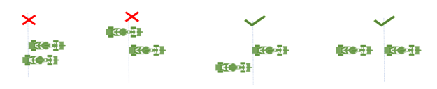

F1 Twitter Refugees League – Rules
Last edited: Friday 8 September,
17:22 UTC
1. League Important notice:
1.1. Every driver participating to the
event are requested to be in VC, it can be the public one, or their team
private one.
1.2. Drivers are requested to be in the briefing,
which happens 15 minutes before the green flag of the qualifications. If
drivers fail to do so, they may miss exceptional guidelines, they may be penalized
if those exceptional guidelines are not respected.
1.3. You MUST keep a look on the Announcement
channel, or your team VC text chat. “Bot-ass” will deploy messages about
special events from the RC in those channels. You are advised to have it open
on your phone. An exception can be made if you have an engineer, in which case
they can warn you about events/exceptional guidelines to apply.
1.4. Driver on PC (Steam/EA)
1.4.1. You are requested to save the full
race replay of the event. Do not only save the highlights.
1.4.2. The file of the replay can be found
at “Documents/My Games/F1 23/replays”, find the correct “.frr” file. The name is in the following format “[track]_[old or current team name]_online_custom_[ddmmyyyy]_[hhmm].frr”.
1.4.3. You need to send this file to the
broadcast director/race direction (Baguette)
1.4.3.1.
If
you have Nitro: You should be able to directly upload the file
1.4.3.2.
If
you don’t have nitro or it fails: Upload the file on Wetransfer, make
sure to go to the 3 dots and select “Get transfer link”, you can then send the
file by DM to the RD/Broadscast Direction (Baguette)
or in the public chat.
2. Racing
Rules:
2.1. Clean racing:
2.1.1. Race cleanly at all times. No
contact should occur between cars on track, and as a driver you are required to
do your best to avoid this from happening. Accidents can happen, but if you are
at fault for causing a collision, and this is reported to the stewards, you may
be penalized.
2.1.2. Deliberately crashing into another
car will result in being temporally (or permanently) excluded from the league.
2.2. On-track battling:
2.2.1. It is the responsibility of the
overtaking car to perform the overtake safely. Don't be too aggressive when
trying to overtake and make sure you can do it without contact with the slower
car.
2.2.2. Do not force another car off the
track by leaving it too little room on corner entry or exit. If the other car
is alongside, you when going into a corner (at the turn-in point[1]),
or when exiting a corner, you must adjust your line to avoid contact and to not
force the other car off the track. Being sufficiently 'alongside' to warrant
being left room is generally judged as the attacking car's nose being alongside
or ahead of the defending car's sidepod.
2.2.3. Any movement in the braking zone is
not accepted when in close proximity to other cars, as the action can easily
cause an incident. Choose a line before entering the braking zone, and hold
that line until the turn-in point. If you come from a defensive position and
want to move back towards the racing line, you must leave at least one car
width between your car and the edge of the track.
2.2.4. On straights, if another driver has
any part of their car alongside your car, you must respect their position on
the track and avoid making any movement into the other car.
"Squeezing" the other car can result in penalties.
2.2.5. Excessive[2]
weaving and blocking are not allowed when defending from another car. You
should always make sure the attacking car has sufficient time to react to your
movement.
2.3. Track Limits:
2.3.1. Stay within the track boundaries
with at least two tires at all times. The track boundaries are defined by the
white lines, NOT by the edge of the kerbs.
2.3.2. Track limits penalties are deployed
by the game itself.
2.3.3. The occasional misjudgment of a corner
can happen, but if you accidentally gain an advantage by going outside the
track limits you are expected to back off to an extent that clearly negates any
advantage gained.
2.3.4. The Stewards’ may apply supplementary
penalties after the race if you gained time, or if you overtook someone outside
of the track limits.
2.4. Qualifying:
2.4.1. In qualifying, it is your own
responsibility to find free space on the track when starting a flying lap. You
may want to enable the trajectory assist to see the trajectory.
2.4.2. If you are on an in- or out-lap, you
are obligated to give free space to the faster cars coming without blocking
them, either on the straights or in the corners.
2.4.3. In case of an impeding,
you may be given one of the following penalties:
2.4.3.1.
A
1 place grid drop, if the action is caught on the live broadcast, or if a valid
video footage[3] is
given to the Race Direction (Dom), BEFORE the end of qualification or immediately
after the end of it. If the Race Direction start an investigation immediately,
race start may be delayed during this investigation by a 5 minutes time delay.
If the investigation is longer than 5 minutes, the investigation is temporally
interrupted, and is investigated after the race or during the race.
2.4.3.2.
A
3 seconds penalty, if a valid video footage[4]
is given to Race Direction (Dom), AFTER the race start or the end of the race.
Footage may be sent to Race Direction only in a 2 hours’ time frame after the
end of the race. The decision of starting an investigation will be at the
discretion of Race Direction.
2.4.4. In qualifying, it is not permitted
to cut or miss sections of track at any time, including on in-laps and
out-laps. Doing so will be penalized.
2.5. Spatial Awareness:
2.5.1. It is important to be aware of where
other cars are around you on track at all times, so taking extra care is vital
both at the start of a race and in battles.
2.5.2. If you spin off the track while
other cars are close behind, make sure to wait with rejoining the track until
it is safe to do so. As a suggestion, use the mini-map to ensure that no cars
are close by when you rejoin. Even if ghosting is activated, the system may not
always work as intended, and even as a ghosted car, returning to track across
another car's path can disrupt their path and may result in penalties.
2.5.3. If you spin and end up sideways or
backwards on the track, stay still until any oncoming cars have gone past. It
is far easier to avoid a stationary obstacle.
2.5.4. When you're coming up to lap another
car, it is still your responsibility to overtake them without incident. If
necessary, wait for a better position to complete your move.
3. On-Track
Regulations:
3.1. In-game penalties:
3.1.1. If you feel that the game has
awarded you an unfair time penalty, you can apply for a penalty removal in the chat
channel after the race. Compensation for unfair drive-throughs or stop-go
penalties will not be possible, as this affects your position on the track
during the race.
3.2. Being lapped:
3.2.1. When the game shows you the blue
flag, you have been caught up by a car on a lap ahead of you. When being
lapped, it is your responsibility to let the leaders through safely at the earliest
opportunity, without costing them any time, in the track limits, which should
be done without sudden moves, especially when approaching braking zones.
3.2.2. If you are going faster than a car
that has lapped you, do not attempt to unlap yourself unless it is safe to do
so and doesn't hinder the car in front.
3.3. Safety car & virtual safety car
guidelines:
3.3.1. During a virtual safety car, or
while catching up to the train during a safety car period, you must not exceed
the delta time indicated by the game.
3.3.2. If you are the lead car and driving
to catch up to the safety car, please take caution when approaching it, as it
will be moving very slowly while waiting to pick you up. Approach it slowly and
then the safety car should pick up its speed. Make sure you keep a safe
distance to the safety car to avoid potentially hitting it if lag or other
inconsistencies occur, as this may lead to the game disqualifying you from the
race.
3.3.3. As the leader of the pack following
the safety car, do not intentionally slow the pack down to a dangerously low
speed when controlling the pace ahead of a restart. This also applies to
virtual safety car periods and driving unnecessarily slower than the delta and
therefore backing up cars behind.
3.3.4. While in the safety car queue, do
not drive dangerously by weaving excessively or suddenly slowing down in front
of someone. Keep a safe distance to the car ahead, but without creating an
unnaturally big gap in the queue.
3.3.5. No overtaking should happen under
safety car conditions, even if the car ahead of you is a ghost car driven by
the AI, or a car that is lapped.
3.3.6. It is prohibited to park or crash
your car for the purpose of initiating a safety car situation. Anyone found to
have deliberately crashed out or retired their car on track will be severely penalized
regardless of whether this actually ended up causing a safety car.
3.3.7. You are not allowed to be side-to-side
with another car during a Safety Car, Virtual Safety Car, or right before a
restart. 
3.4. Formation lap guidelines:
3.4.1. All drivers are required to complete
the formation lap. It is not allowed to skip the formation lap by intentionally
driving in a manner that sends you back to the grid, nor being at fault for an
incident that sends you back to the grid. You may be penalized after the race
if you do that.
3.4.2. At the start of the formation lap,
please do not move away from your grid slot until every car ahead of you have
started moving.
3.4.3. During the formation lap, do not
drive dangerously by weaving excessively or suddenly slowing down in front of
someone. Keep a safe distance to the car ahead, but without creating an
unnaturally big gap in the queue.
3.4.4. Pausing the game during the
Formation lap is strictly forbidden, in case of emergency, please warn RC[5]
so a restart can be done.
3.5. Pit stops:
3.5.1. Even after the events of Round 1[6],
drivers ARE allowed
to use Pit Assist.
3.5.2. Upon entering and exiting the pits,
all four wheels must within the white lines for the entirety of pit entry and
exit. Accidents caused due to violations of this rule will be punished with
extra severity.
3.6. DRS:
3.6.1. Driving in a dangerous or unsporting
manner in order to gain the use of DRS in the race is not allowed and may be penalized
retrospectively. This kind of driving includes - but is not limited to -
violently decelerating and/or steering when clearly in front of the following
car.
3.7. Jump start:
3.7.1. Any jump start should be penalized
by the game with a drive through penalty. However, drivers must still take the
safest possible action they deem fit at the time. That may be to stop, but that
may depend at what stage in the start sequence we are at.
3.7.2. Many jumps start will take place
when all 5 lights are lit up and the driver will go a millisecond before the
lights go out. If this happens, being this close to the start, the driver
should just continue in position until the end of the lap, where they will do their
DT[7].
If the jump start happens a couple of seconds before the race start and the
driver decides to keep going with stationary cars, this is fine as long as they
do not make contact.
4. Disconnections:
4.1. During qualifying, if 2 or more
drivers lose connection to the lobby and are unable to get back in, then the
lobby will be restarted and qualifying run again from scratch.
4.2. During the race, if half or more of
the drivers in the lobby lose connection simultaneously, or over a short period
of time, that counts as a mass disconnection. A "short period of
time" would generally mean a couple of minutes, up to a maximum of 5
minutes. This also includes major de-syncing where the lobby gets split up or
the other drivers become into slow-moving ghost cars on everyone else's screen,
even if they are technically still racing on their own screen.
4.3. If less than 50% of the race was
completed at the time of the mass disconnection, the race will be restarted
immediately, preferably with a new lobby host. The new lobby will be created
without another qualifying session, and the grid will be set up in the same
order as the original qualifying results, using the 'grid editor' feature.
4.4. If less than 50% of the race was
completed at the time of the mass disconnection, the race will be restarted
immediately, preferably with a new lobby host. The new lobby will be created
without another qualifying session, and the grid will be set up in the same
order as the original qualifying results, using the 'grid editor' feature.
4.5. If more than 90% of the race was
completed at the time of the mass disconnection, the race may be ended, this is
up to RC discretion, and the race order from the time of the first
disconnection becomes the final result. Full points are awarded to all drivers.
5. Lobby restarts:
5.1. The lobby may be restarted by the RC
in the event of a major issue that affects the normal progression of the
session(s). This includes mass disconnections (as per section 4.2 above) and
the lobby getting stuck on the loading screen before qualifying or between
qualifying and the race.
5.2. If the lobby restart happens after
the qualifying session has concluded, the new lobby will be set up with only a
race session. In this scenario, the 'grid editor' will be used to place the
drivers into their correct qualifying positions. All drivers who qualified in
the top 10 will have to select the same tire compound as they used to set their
fastest qualifying lap.
[1] The 'turn-in point' in this setting
refers the natural turn-in point as per the standard racing line. If the
defending car causes contact due to turning in earlier than what is considered
the standard, he will be seen at fault.
[2] The definition of “Excessive” is up
to the Race Direction discretion.
[3] NVIDIA GeForce GPU users or Xbox
users may use the “Immediate Replay” feature and upload it to Wetransfer or any other platform. Feel free to
ask for help before the event.
[4] NVIDIA GeForce GPU users or Xbox users may use the “Immediate Replay” feature and upload it to Wetransfer or any other platform. Feel free to ask for help before the event.
[5] Race control, which is Baguette or
Dom
[6] Car 7 was caught using Pit Assist
to gain time at Bahrain even though the assist was banned during the race briefing,
no further actions were taken.
[7] Drive through